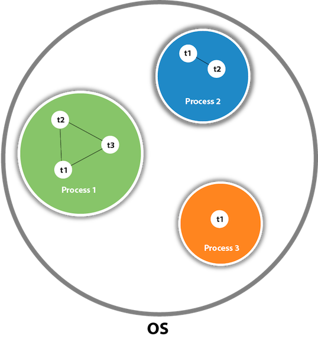

<!DOCTYPE html>
<html lang="en">

</html>
<html>

<head>
    <meta charset="UTF-8">
    <meta http-equiv="X-UA-Compatible" content="IE=edge">
    <title> Java Multithreading Interview Questions - Interview of Geeks</title>

    <!-- Css -->
    <link rel="favicon icon" href="favicon.png">
    <link rel="stylesheet" href="../style/style.css">
    <link href="https://cdn.jsdelivr.net/npm/bootstrap@5.0.0-beta2/dist/css/bootstrap.min.css" rel="stylesheet"
        integrity="sha384-BmbxuPwQa2lc/FVzBcNJ7UAyJxM6wuqIj61tLrc4wSX0szH/Ev+nYRRuWlolflfl" crossorigin="anonymous">

    <!-- Scripts -->
    <script src="https://code.jquery.com/jquery-3.2.1.slim.min.js"></script>
    <script src="https://cdn.jsdelivr.net/npm/bootstrap@5.0.0-beta2/dist/js/bootstrap.bundle.min.js"
        integrity="sha384-b5kHyXgcpbZJO/tY9Ul7kGkf1S0CWuKcCD38l8YkeH8z8QjE0GmW1gYU5S9FOnJ0"
        crossorigin="anonymous"></script>

    <!-- Meta Tags -->
    <meta name="keywords"
        content="interviewofgeeks, interview of geeks, interview preperation, interview questions, interview, java, core java,  java multithreading interview questions, java multithreading, multithreading interview questions, multithreadingquestions">
    <meta name="author" content="Ajay Kumar">
    <meta name="description"
        content="Interviewofgeeks - Multithreading and Synchronization are considered as the typical chapter in java programming. In game development companies, multithreading related interview questions are asked mostly. A list of frequently asked java multithreading and concurrency interview questions is given below">
    <meta name="viewport" content="width=device-width, initial-scale=1.0">

    <!-- Global site tag (gtag.js) - Google Analytics -->
    <script data-ad-client="ca-pub-4645356742269640" async
        src="https://pagead2.googlesyndication.com/pagead/js/adsbygoogle.js"></script>
    <script async src="https://www.googletagmanager.com/gtag/js?id=G-ZX3ZK4E5HC"></script>
    <script>
        window.dataLayer = window.dataLayer || [];
        function gtag() { dataLayer.push(arguments); }
        gtag('js', new Date());

        gtag('config', 'G-ZX3ZK4E5HC');
    </script>

    <style>
        body {
            font-family: 'Open Sans', sans-serif;
            background-color: rgb(250, 250, 250);
            overflow-x: hidden;
        }
    </style>


</head>
<!-- Header -->

<body>

    <div class="">
        <nav class="navbar bg-white" id="siteloog">
            <a href="../index.html"><span class="navbar-brand mb-0 h1"></span></a>
        </nav>
        <!-- Header Menu -->
        <nav class="navbar navbar-expand-lg navbar-light bg-white">
            <button class="navbar-toggler" type="button" data-toggle="collapse" data-target="#navbarNav"
                aria-controls="navbarNav" aria-expanded="false" aria-label="Toggle navigation">
                <span class="navbar-toggler-icon"></span>
            </button>
            <div class="collapse navbar-collapse" id="navbarNav">
                <ul class="navbar-nav">
                    <li class="nav-item ">
                        <a class="nav-link" href="../index.html">Home</a>
                    </li>
                    <li class="nav-item">
                        <a class="nav-link" href="data-structure.html">Data Structure</a>
                    </li>
                    <li class="nav-item">
                        <a class="nav-link" href="algorithm.html">Algorithm</a>
                    </li>
                    <li class="nav-item">
                        <a class="nav-link" href="company-interview.html">Company Interview</a>
                    </li>
                    <li class="nav-item">
                        <a class="nav-link" href="technical-interview.html">Technical Interview</a>
                    </li>
                    <li class="nav-item">
                        <a class="nav-link" href="web-interview.html">Web Interview</a>
                    </li>
                    <li class="nav-item">
                        <a class="nav-link active" href="java-interview.html">Java Interview</a>
                    </li>
                    <li class="nav-item">
                        <a class="nav-link" href="database-interview.html">Data Base Interview</a>
                    </li>
                    <li class="nav-item">
                        <a class="nav-link" href="python-interview.html">Python Interview</a>
                    </li>
                </ul>
            </div>
        </nav>

        <!-- Main div -->
        <div class="container  ">
            <div class="row" style="margin-top: 25px;">
                <div class="col-md-8 bg-white shadow-sm">
                    <span>
                        <h4 class="hm-welcome">Java Multithreading and Concurrency Interview Questions</h4>
                    </span><span>45 Questions</span>

                    <hr class="divider">
                    <p class="read-para">Multithreading and Synchronization are considered as the typical chapter in
                        java programming. In game development companies, multithreading related interview questions are
                        asked mostly. A list of frequently asked java multithreading and concurrency interview questions
                        is given below</p>
                    <br>

                    <div>
                        <ol class="qa-list" id="javamultithreadingquestions">
                            <li>
                                <h5 class="question">1. What is multithreading?</h5>
                                <p class="read-para">Multithreading is a process of executing multiple threads
                                    simultaneously. Multithreading is used to obtain the multitasking. It consumes less
                                    memory and gives the fast and efficient performance. Its main advantages are:</p>
                                <ul class="read-para">
                                    <li>Threads share the same address space.</li>
                                    <li>The thread is lightweight.</li>
                                    <li>The cost of communication between the processes is low.</li>
                                </ul>
                                <hr>
                            </li>

                            <li>
                                <h5 class="question">2. What is the thread?</h5>
                                <p class="read-para">A thread is a lightweight subprocess. It is a separate path of
                                    execution because each thread runs in a different stack frame. A process may contain
                                    multiple threads. Threads share the process resources, but still, they execute
                                    independently.</p>
                                <hr>
                            </li>

                            <li>
                                <h5 class="question">3. Differentiate between process and thread?</h5>
                                <p class="read-para">There are the following differences between the process and thread.
                                </p>
                                <ul class="read-para">
                                    <li>A Program in the execution is called the process whereas; A thread is a subset
                                        of the process</li>
                                    <li>Processes are independent whereas threads are the subset of process.</li>
                                    <li>Process have different address space in memory, while threads contain a shared
                                        address space.</li>
                                    <li>Context switching is faster between the threads as compared to processes.</li>
                                    <li>Inter-process communication is slower and expensive than inter-thread
                                        communication.</li>
                                    <li>Any change in Parent process doesn't affect the child process whereas changes in
                                        parent thread can affect the child thread.</li>
                                </ul> <br>
                                

                                <hr>
                            </li>

                            <li>
                                <h5 class="question">4. What do you understand by inter-thread communication?</h5>
                                <ul class="read-para">
                                    <li>The process of communication between synchronized threads is termed as
                                        inter-thread communication.</li>
                                    <li>Inter-thread communication is used to avoid thread polling in Java.</li>
                                    <li>The thread is paused running in its critical section, and another thread is
                                        allowed to enter (or lock) in the same critical section to be executed.</li>
                                    <li>It can be obtained by wait(), notify(), and notifyAll() methods.</li>
                                </ul>
                                <hr>
                            </li>

                            <li>
                                <h5 class="question">5. What is the purpose of wait() method in Java?</h5>
                                <p class="read-para">The wait() method is provided by the Object class in Java. This
                                    method is used for inter-thread communication in Java. The java.lang.Object.wait()
                                    is used to pause the current thread, and wait until another thread does not call the
                                    notify() or notifyAll() method. Its syntax is given below. <br><br>

                                    public final void wait()</p>
                                <hr>
                            </li>

                            <li>
                                <h5 class="question">6. Why must wait() method be called from the synchronized block?
                                </h5>

                                <p class="read-para">We must call the wait method otherwise it will throw
                                    <span>java.lang.IllegalMonitorStateException </span> exception. Moreover, we need
                                    wait() method for inter-thread communication with notify() and notifyAll().
                                    Therefore It must be present in the synchronized block for the proper and correct
                                    communication.
                                </p>
                                <hr>
                            </li>

                            <li>
                                <h5 class="question">7. What are the advantages of multithreading?</h5>
                                <p class="read-para">Multithreading programming has the following advantages:</p>

                                <ul class="read-para">
                                    <li>Multithreading allows an application/program to be always reactive for input,
                                        even already running with some background tasks</li>
                                    <li>Multithreading allows the faster execution of tasks, as threads execute
                                        independently.</li>
                                    <li>Multithreading provides better utilization of cache memory as threads share the
                                        common memory resources.</li>
                                    <li>Multithreading reduces the number of the required server as one server can
                                        execute multiple threads at a time.</li>
                                </ul>
                                <hr>
                            </li>

                            <li>
                                <h5 class="question">8. What are the states in the lifecycle of a Thread?</h5>
                                <p class="read-para">A thread can have one of the following states during its lifetime:
                                </p>
                                <ol>
                                    <li class="read-para"><span>New:</span> In this state, a Thread class object is
                                        created using a new operator, but the thread is not alive. Thread doesn't start
                                        until we call the start() method.</li>
                                    <li class="read-para"><span>Runnable:</span> In this state, the thread is ready to
                                        run after calling the start() method. However, the thread is not yet selected by
                                        the thread scheduler.</li>
                                    <li class="read-para"><span>Running:</span> In this state, the thread scheduler
                                        picks the thread from the ready state, and the thread is running.</li>
                                    <li class="read-para"><span>Waiting/Blocked:</span> In this state, a thread is not
                                        running but still alive, or it is waiting for the other thread to finish.</li>
                                    <li class="read-para"><span>Dead/Terminated: </span> A thread is in terminated or
                                        dead state when the run() method exits.</li>
                                </ol>
                                
                                <hr>
                            </li>

                            <li>
                                <h5 class="question">9. What is the difference between preemptive scheduling and time
                                    slicing?</h5>
                                <p class="read-para">Under preemptive scheduling, the highest priority task executes
                                    until it enters the waiting or dead states or a higher priority task comes into
                                    existence. Under time slicing, a task executes for a predefined slice of time and
                                    then reenters the pool of ready tasks. The scheduler then determines which task
                                    should execute next, based on priority and other factors.</p>
                                <hr>
                            </li>

                            <li>
                                <h5 class="question">10. What is context switching?</h5>
                                <p class="read-para">In Context switching the state of the process (or thread) is stored
                                    so that it can be restored and execution can be resumed from the same point later.
                                    Context switching enables the multiple processes to share the same CPU.</p>
                                <hr>
                            </li>

                            <li>
                                <h5 class="question">11. Differentiate between the Thread class and Runnable interface
                                    for creating a Thread?</h5>
                                <p class="read-para">The Thread can be created by using two ways.</p>
                                <ul class="read-para">
                                    <li>By extending the Thread class</li>
                                    <li>By implementing the Thread class</li>
                                </ul>
                                <p class="read-para">However, the primary differences between both the ways are given
                                    below:</p>
                                <ul class="read-para">
                                    <li>By extending the Thread class, we cannot extend any other class, as Java does
                                        not allow multiple inheritances while implementing the Runnable interface; we
                                        can also extend other base class(if required).</li>
                                    <li>By extending the Thread class, each of thread creates the unique object and
                                        associates with it while implementing the Runnable interface; multiple threads
                                        share the same object</li>
                                    <li>Thread class provides various inbuilt methods such as getPriority(), isAlive and
                                        many more while the Runnable interface provides a single method, i.e., run().
                                    </li>
                                </ul>
                                <hr>
                            </li>

                            <li>
                                <h5 class="question">12. What does join() method?</h5>
                                <p class="read-para">The join() method waits for a thread to die. In other words, it
                                    causes the currently running threads to stop executing until the thread it joins
                                    with completes its task. Join method is overloaded in Thread class in the following
                                    ways.</p>
                                <ul class="read-para">
                                    <li>public void join()throws InterruptedException</li>
                                    <li>public void join(long milliseconds)throws InterruptedException</li>
                                </ul>
                                <hr>
                            </li>

                            <li>
                                <h5 class="question">13. Describe the purpose and working of sleep() method.</h5>
                                <p class="read-para">
                                    The sleep() method in java is used to block a thread for a particular time, which
                                    means it pause the execution of a thread for a specific time. There are two methods
                                    of doing so.
                                </p>
                                <p class="read-para"><span>Syntax:</span></p>
                                <ul class="read-para">
                                    <li>public static void sleep(long milliseconds)throws InterruptedException</li>
                                    <li>public static void sleep(long milliseconds, int nanos)throws
                                        InterruptedException</li>
                                </ul>
                                <p class="read-para"><span>Working of sleep() method</span> <br><br>When we call the
                                    sleep() method, it pauses the execution of the current thread for the given time and
                                    gives priority to another thread(if available). Moreover, when the waiting time
                                    completed then again previous thread changes its state from waiting to runnable and
                                    comes in running state, and the whole process works so on till the execution doesn't
                                    complete.</p>
                                <hr>
                            </li>

                            <li>
                                <h5 class="question">14. What is the difference between wait() and sleep() method?</h5>
                                <table class="table">
                                    <thead class="thead-dark read-para">
                                        <tr>
                                            <th scope="col" style="width: 50%;">wait()</th>
                                            <th scope="col" style="width: 50%;">sleep()</th>
                                        </tr>
                                    </thead>
                                    <tbody class="read-para">
                                        <tr>
                                            <td>1) The wait() method is defined in Object class.</td>
                                            <td>The sleep() method is defined in Thread class.</td>
                                        </tr>
                                        <tr>
                                            <td>2) The wait() method releases the lock.</td>
                                            <td>The sleep() method doesn't release the lock.</td>
                                        </tr>
                                    </tbody>
                                </table>
                                <hr>
                            </li>

                            <li>
                                <h5 class="question">15. Is it possible to start a thread twice?</h5>
                                <p class="read-para">No, we cannot restart the thread, as once a thread started and
                                    executed, it goes to the Dead state. Therefore, if we try to start a thread twice,
                                    it will give a runtimeException "java.lang.IllegalThreadStateException". Consider
                                    the following example.</p>
                                <code>
                                    public class Multithread1 extends Thread  <br>
{  <br>
   public void run()  <br>
    {  <br>
      try {  <br>
          System.out.println("thread is executing now........");  <br>
      } catch(Exception e) {  <br>
      }   <br>
    }  <br>
    public static void main (String[] args) {  <br>
        Multithread1 m1= new Multithread1();  <br>
        m1.start();  <br>
        m1.start();  <br>
    }  <br>
}
                                </code>
                                <p class="read-para" style="font-style:italic;">Output</p>
                                <code>
                                    thread is executing now........  <br>
Exception in thread "main" java.lang.IllegalThreadStateException <br>
	at java.lang.Thread.start(Thread.java:708) <br>
	at Multithread1.main(Multithread1.java:13)
                                </code>
                                <hr>
                            </li>

                            <li>
                                <h5 class="question">16. Can we call the run() method instead of start()?</h5>
                                <p class="read-para">Yes, calling run() method directly is valid, but it will not work
                                    as a thread instead it will work as a normal object. There will not be
                                    context-switching between the threads. When we call the start() method, it
                                    internally calls the run() method, which creates a new stack for a thread while
                                    directly calling the run() will not create a new stack.</p>
                                <hr>
                            </li>

                            <li>
                                <h5 class="question">17. What about the daemon threads?</h5>
                                <p class="read-para">The daemon threads are the low priority threads that provide the
                                    background support and services to the user threads. Daemon thread gets
                                    automatically terminated by the JVM if the program remains with the daemon thread
                                    only, and all other user threads are ended/died. There are two methods for daemon
                                    thread available in the Thread class:</p>
                                <ul>
                                    <li class="read-para"><span>public void setDaemon(boolean status):</span> It used to
                                        mark the thread daemon thread or a user thread.</li>
                                    <li class="read-para"><span> public boolean isDaemon():</span> It checks the thread
                                        is daemon or not.</li>
                                </ul>
                                <hr>
                            </li>

                            <li>
                                <h5 class="question">18. Can we make the user thread as daemon thread if the thread is
                                    started?</h5>
                                <p class="read-para">No, if you do so, it will throw IllegalThreadStateException.
                                    Therefore, we can only create a daemon thread before starting the thread.</p>

                                <code>
                                    class Testdaemon1 extends Thread{    <br>
                                        public void run(){  <br>
                                                  System.out.println("Running thread is daemon...");  <br>
                                        }  <br>
                                        public static void main (String[] args) {  <br>
                                              Testdaemon1 td= new Testdaemon1();  <br>
                                              td.start();  <br>
                                              setDaemon(true);// It will throw the exception: td.   <br>
                                           }  <br>
                                        }
                                </code>
                                <p class="read-para" style="font-style:italic;">Output</p>
                                <code>
                                    Running thread is daemon...  <br>
Exception in thread "main" java.lang.IllegalThreadStateException <br>
at java.lang.Thread.setDaemon(Thread.java:1359) <br>
at Testdaemon1.main(Testdaemon1.java:8)
                                </code>

                                <hr>
                            </li>

                            <li>
                                <h5 class="question">19. What is shutdown hook?</h5>
                                <p class="read-para">The shutdown hook is a thread that is invoked implicitly before JVM
                                    shuts down. So we can use it to perform clean up the resource or save the state when
                                    JVM shuts down normally or abruptly. We can add shutdown hook by using the following
                                    method:</p>

                                <code>
                                        public void addShutdownHook(Thread hook){}  <br>  
Runtime r=Runtime.getRuntime();  <br>
r.addShutdownHook(new MyThread());  
                                    </code>
                                <p class="read-para">Some important points about shutdown hooks are :</p>
                                <ul class="read-para">
                                    <li>Shutdown hooks initialized but can only be started when JVM shutdown occurred.
                                    </li>
                                    <li>Shutdown hooks are more reliable than the finalizer() because there are very
                                        fewer chances that shutdown hooks not run.</li>
                                    <li>The shutdown hook can be stopped by calling the halt(int) method of Runtime
                                        class.</li>
                                </ul>
                                <hr>
                            </li>

                            <li>
                                <h5 class="question">20. When should we interrupt a thread?</h5>
                                <p class="read-para">We should interrupt a thread when we want to break out the sleep or
                                    wait state of a thread. We can interrupt a thread by calling the interrupt()
                                    throwing the InterruptedException.</p>
                                <hr>
                            </li>

                            <li>
                                <h5 class="question">21. What is the synchronization?</h5>
                                <p class="read-para">Synchronization is the capability to control the access of multiple
                                    threads to any shared resource. It is used:</span>
                                </p>

                                <ul class="read-para">
                                    <li>To prevent thread interference.</li>
                                    <li>To prevent consistency problem.</li>
                                </ul>
                                <p class="read-para">When the multiple threads try to do the same task, there is a
                                    possibility of an erroneous result, hence to remove this issue, Java uses the
                                    process of synchronization which allows only one thread to be executed at a time.
                                    Synchronization can be achieved in three ways:</p>

                                <ul class="read-para">
                                    <li>by the synchronized method</li>
                                    <li>by synchronized block</li>
                                    <li>by static synchronization</li>
                                </ul>

                                <p class="read-para">Syntax for synchronized block</p>

                                <code>
                                        synchronized(object reference expression)  <br>
    {  <br>
        //code block  <br>
    }  
      
                                    </code>


                                <hr>
                            </li>

                            <li>
                                <h5 class="question">22. What is the purpose of the Synchronized block?</h5>
                                <p class="read-para">The Synchronized block can be used to perform synchronization on
                                    any specific resource of the method. Only one thread at a time can execute on a
                                    particular resource, and all other threads which attempt to enter the synchronized
                                    block are blocked.</p>
                                <ul class="read-para">
                                    <li>Synchronized block is used to lock an object for any shared resource.</li>
                                    <li>The scope of the synchronized block is limited to the block on which, it is
                                        applied. Its scope is smaller than a method.</li>
                                </ul>

                                <hr>
                            </li>

                            <li>
                                <h5 class="question">23. Can Java object be locked down for exclusive use by a given
                                    thread?</h5>
                                <p class="read-para">Yes. You can lock an object by putting it in a "synchronized"
                                    block. The locked object is inaccessible to any thread other than the one that
                                    explicitly claimed it.</p>
                                <hr>
                            </li>
                            <li>
                                <h5 class="question">24. What is static synchronization?</h5>
                                <p class="read-para">If you make any static method as synchronized, the lock will be on
                                    the class not on the object. If we use the synchronized keyword before a method so
                                    it will lock the object (one thread can access an object at a time) but if we use
                                    static synchronized so it will lock a class (one thread can access a class at a
                                    time).</p>
                                <hr>
                            </li>

                            <li>
                                <h5 class="question">25. What is the difference between notify() and notifyAll()?</h5>
                                <p class="read-para">The notify() is used to unblock one waiting thread whereas
                                    notifyAll() method is used to unblock all the threads in waiting state.</p>

                                <hr>
                            </li>

                            <li>
                                <h5 class="question">26. What is the deadlock?</h5>
                                <p class="read-para">Deadlock is a situation in which every thread is waiting for a
                                    resource which is held by some other waiting thread. In this situation, Neither of
                                    the thread executes nor it gets the chance to be executed. Instead, there exists a
                                    universal waiting state among all the threads. Deadlock is a very complicated
                                    situation which can break our code at runtime.</p>
                                <hr>
                            </li>

                            <li>
                                <h5 class="question">27. How to detect a deadlock condition? How can it be avoided?</h5>
                                <p class="read-para">We can detect the deadlock condition by running the code on cmd and
                                    collecting the Thread Dump, and if any deadlock is present in the code, then a
                                    message will appear on cmd. <br><br>

                                    <span>Ways to avoid the deadlock condition in Java:</span>
                                </p>
                                <ul>
                                    <li class="read-para"><span>Avoid Nested lock:</span> Nested lock is the common
                                        reason for deadlock as deadlock occurs when we provide locks to various threads
                                        so we should give one lock to only one thread at some particular time.</li>
                                    <li class="read-para"> <span>Avoid unnecessary locks:</span> we must avoid the locks
                                        which are not required.</li>
                                    <li class="read-para"><span>Using thread join:</span> Thread join helps to wait for
                                        a thread until another thread doesn't finish its execution so we can avoid
                                        deadlock by maximum use of join method.</li>
                                </ul>
                                <hr>
                            </li>


                            <li>
                                <h5 class="question">28. What is Thread Scheduler in java?</h5>
                                <p class="read-para">In Java, when we create the threads, they are supervised with the
                                    help of a Thread
                                    Scheduler, which is the part of JVM. Thread scheduler is only responsible for
                                    deciding which thread should be executed. Thread scheduler uses two mechanisms for
                                    scheduling the threads: Preemptive and Time Slicing. <br><br>
                                    Java thread scheduler also works for deciding the following for a thread:
                                </p>
                                <ul class="read-para">
                                    <li>It selects the priority of the thread.</li>
                                    <li>It determines the waiting time for a thread</li>
                                    <li>It checks the Nature of thread</li>
                                </ul>

                                <hr>
                            </li>

                            <li>
                                <h5 class="question">29. Does each thread have its stack in multithreaded programming?
                                </h5>
                                <p class="read-para">Yes, in multithreaded programming every thread maintains its own or
                                    separate stack area in memory due to which every thread is independent of each
                                    other.</p>
                                <hr>
                            </li>

                            <li>
                                <h5 class="question">30. How is the safety of a thread achieved?</h5>
                                <p class="read-para">If a method or class object can be used by multiple threads at a
                                    time without any race condition, then the class is thread-safe. Thread safety is
                                    used to make a program safe to use in multithreaded programming. It can be achieved
                                    by the following ways:</p>

                                <ul class="read-para">
                                    <li>Synchronization</li>
                                    <li>Using Volatile keyword</li>
                                    <li>Using a lock based mechanism</li>
                                    <li>Use of atomic wrapper classes</li>
                                </ul>
                                <hr>
                            </li>

                            <li>
                                <h5 class="question">31. What is race-condition?</h5>
                                <p class="read-para">A Race condition is a problem which occurs in the multithreaded
                                    programming when various threads execute simultaneously accessing a shared resource
                                    at the same time. The proper use of synchronization can avoid the Race condition.
                                </p>
                                <hr>
                            </li>

                            <li>
                                <h5 class="question">32. What is the volatile keyword in java?</h5>
                                <p class="read-para">Volatile keyword is used in multithreaded programming to achieve
                                    the thread safety, as a change in one volatile variable is visible to all other
                                    threads so one variable can be used by one thread at a time.</p>
                                <hr>
                            </li>

                            <li>
                                <h5 class="question">33. What do you understand by thread pool?</h5>
                                <ul class="read-para">
                                    <li>Java Thread pool represents a group of worker threads, which are waiting for the
                                        task to be allocated.</li>
                                    <li>Threads in the thread pool are supervised by the service provider which pulls
                                        one thread from the pool and assign a job to it.</li>
                                    <li>After completion of the given task, thread again came to the thread pool.</li>
                                    <li>The size of the thread pool depends on the total number of threads kept at
                                        reserve for execution.</li>
                                </ul> <br>
                                <p class="read-para">The advantages of the thread pool are :</p>
                                <ul class="read-para">
                                    <li>Using a thread pool, performance can be enhanced.</li>
                                    <li>Using a thread pool, better system stability can occur.</li>
                                </ul>
                                <hr>
                            </li>

                            <li>
                                <h5 class="question">34. What are the main components of concurrency API?</h5>
                                <p class="read-para">Concurrency API can be developed using the class and interfaces of
                                    java.util.Concurrent package. There are the following classes and interfaces in
                                    java.util.Concurrent package.</p>
                                <ul class="read-para">
                                    <li>Executor</li>
                                    <li>FarkJoinPool</li>
                                    <li>ExecutorService</li>
                                    <li>ScheduledExecutorService</li>
                                    <li>Future</li>
                                    <li>TimeUnit(Enum)</li>
                                    <li>CountDownLatch</li>
                                    <li>CyclicBarrier</li>
                                    <li>Semaphore</li>
                                    <li>ThreadFactory</li>
                                    <li>BlockingQueue</li>
                                    <li>DelayQueue</li>
                                    <li>Locks</li>
                                    <li>Phaser</li>
                                </ul>
                                <hr>
                            </li>

                            <li>
                                <h5 class="question">35. What is the Executor interface in Concurrency API in Java?</h5>
                                <p class="read-para">The Executor Interface provided by the package java.util.concurrent
                                    is the simple interface used to execute the new task. The execute() method of
                                    Executor interface is used to execute some given command. The syntax of the
                                    execute() method is given below. <br> <br> <span>void execute(Runnable
                                        command)</span> <br><br>

                                    Consider the following example:</p>

                                <code>
                                        import java.util.concurrent.Executor;  <br>
import java.util.concurrent.Executors;  <br>
import java.util.concurrent.ThreadPoolExecutor;  <br>
import java.util.concurrent.TimeUnit;  <br>
  <br>
public class TestThread {  <br>
   public static void main(final String[] arguments) throws InterruptedException {  <br>
      Executor e = Executors.newCachedThreadPool();  <br>
      e.execute(new Thread());  <br>
      ThreadPoolExecutor pool = (ThreadPoolExecutor)e;  <br>
      pool.shutdown();  <br>
   }    <br>
  <br>
   static class Thread implements Runnable {  <br>
      public void run() {  <br>
         try {  <br>
            Long duration = (long) (Math.random() * 5);  <br>
            System.out.println("Running Thread!");  <br>
            TimeUnit.SECONDS.sleep(duration);  <br>
            System.out.println("Thread Completed");  <br>
         } catch (InterruptedException ex) {  <br>
            ex.printStackTrace();  <br>
         }  <br>
      }  <br>
   }  <br>
}
                                    </code>

                                <p class="read-para" style="font-style: italic;">Output</p>
                                <code>
                                    Running Thread! <br>
Thread Completed
                                </code>
                                <hr>
                            </li>

                            <li>
                                <h5 class="question">36. What is BlockingQueue?</h5>
                                <p class="read-para">The java.util.concurrent.BlockingQueue is the subinterface of Queue
                                    that supports the operations such as waiting for the space availability before
                                    inserting a new value or waiting for the queue to become non-empty before retrieving
                                    an element from it. Consider the following example.</p>

                                <code>
                                        import java.util.Random;   <br>
import java.util.concurrent.ArrayBlockingQueue;   <br>
import java.util.concurrent.BlockingQueue;   <br>
   <br>
public class TestThread {   <br>
   <br>
   public static void main(final String[] arguments) throws InterruptedException {   <br>
      BlockingQueue&#60;Integer&#62; queue = new ArrayBlockingQueue<Integer>(10);   <br>
   <br>
      Insert i = new Insert(queue);   <br>
      Retrieve r = new Retrieve(queue);   <br>
   <br>
      new Thread(i).start();   <br>
      new Thread(r).start();   <br>
   <br>
      Thread.sleep(2000);   <br>
   }     <br>
   <br>
   <br>
   static class Insert implements Runnable {   <br>
      private BlockingQueue&#60;Integer&#62; queue;   <br>
   <br>
      public Insert(BlockingQueue queue) {   <br>
         this.queue = queue;   <br>
      }   <br>
   <br>
      @Override   <br>
      public void run() {   <br>
         Random random = new Random();   <br>
   <br>
         try {   <br>
            int result = random.nextInt(200);   <br>
            Thread.sleep(1000);   <br>
            queue.put(result);   <br>
            System.out.println("Added: " + result);   <br>
               <br>
            result = random.nextInt(10);   <br>
            Thread.sleep(1000);   <br>
            queue.put(result);   <br>
            System.out.println("Added: " + result); <br>  
               <br>
            result = random.nextInt(50);   <br>
            Thread.sleep(1000);   <br>
            queue.put(result);   <br>
            System.out.println("Added: " + result);   <br>
         } catch (InterruptedException e) {   <br>
            e.printStackTrace();   <br>
         }   <br>
      }       <br>
   }   <br>
   <br>
   static class Retrieve implements Runnable {   <br>
      private BlockingQueue&#60;Integer&#62; queue;   <br>
   <br>
      public Retrieve(BlockingQueue queue) {   <br>
         this.queue = queue;   <br>
      }   <br>
         <br>
      @Override   <br>
      public void run() {   <br>
            <br>
         try {   <br>
            System.out.println("Removed: " + queue.take());   <br>
            System.out.println("Removed: " + queue.take());   <br>
            System.out.println("Removed: " + queue.take());   <br>
         } catch (InterruptedException e) {   <br>
            e.printStackTrace();   <br>
         }   <br>
      }   <br>
   }   <br>
}
                                    </code>

                                <p class="read-para" style="font-style: italic;">Output</p>
                                <code>
                                        Added: 96 <br>
Removed: 96 <br>
Added: 8 <br>
Removed: 8 <br>
Added: 5 <br>
Removed: 5
                                    </code>
                                <hr>
                            </li>

                            <li>
                                <h5 class="question">37. How to implement producer-consumer problem by using
                                    BlockingQueue?</h5>

                                <p class="read-para">The producer-consumer problem can be solved by using BlockingQueue
                                    in the following way.</p>
                                <code>
                                    import java.util.concurrent.BlockingQueue;   <br>
                                    import java.util.concurrent.LinkedBlockingQueue;  <br> 
                                    import java.util.logging.Level;   <br>
                                    import java.util.logging.Logger;   <br>
                                    public class ProducerConsumerProblem {   <br>
                                        public static void main(String args[]){   <br>
                                         //Creating shared object   <br>
                                         BlockingQueue sharedQueue = new LinkedBlockingQueue();   <br>
                                       <br>
                                         //Creating Producer and Consumer Thread   <br>
                                         Thread prod = new Thread(new Producer(sharedQueue));   <br>
                                         Thread cons = new Thread(new Consumer(sharedQueue));   <br>
                                       <br>
                                         //Starting producer and Consumer thread   <br>
                                         prod.start();   <br>
                                         cons.start();   <br>
                                        }   <br>
                                        <br>
                                    }   <br>
                                       <br>
                                    //Producer Class in java   <br>
                                    class Producer implements Runnable {   <br>
                                       <br>
                                        private final BlockingQueue sharedQueue;   <br>
                                       <br>
                                        public Producer(BlockingQueue sharedQueue) {   <br>
                                            this.sharedQueue = sharedQueue;   <br>
                                        }   <br>
                                       <br>
                                        @Override   <br>
                                        public void run() {   <br>
                                            for(int i=0; i&#60;10; i++){   <br>
                                                try {   <br>
                                                    System.out.println("Produced: " + i);   <br>
                                                    sharedQueue.put(i);   <br>
                                                } catch (InterruptedException ex) {   <br>
                                                    Logger.getLogger(Producer.class.getName()).log(Level.SEVERE, null, ex);   <br>
                                                }   <br>
                                            }   <br>
                                        }   <br>
                                       <br>
                                    }   <br>
                                       <br>
                                    //Consumer Class in Java   <br>
                                    class Consumer implements Runnable{   <br>
                                       <br>
                                        private final BlockingQueue sharedQueue;   <br>
                                       <br>
                                        public Consumer (BlockingQueue sharedQueue) {   <br>
                                            this.sharedQueue = sharedQueue;   <br>
                                        }   <br>
                                         <br>
                                        @Override   <br>
                                        public void run() {   <br>
                                            while(true){   <br>
                                                try {   <br>
                                                    System.out.println("Consumed: "+ sharedQueue.take());   <br>
                                                } catch (InterruptedException ex) {   <br>
                                                    Logger.getLogger(Consumer.class.getName()).log(Level.SEVERE, null, ex);  <br> 
                                                }   <br>
                                            }   <br>
                                        }   <br>
                                    }
                                    </code>
                                <p class="read-para" style="font-style: italic;">Output</p>
                                <code>
                                    Produced: 0 <br>
                                    Produced: 1 <br>
                                    Produced: 2 <br>
                                    Produced: 3 <br>
                                    Produced: 4 <br>
                                    Produced: 5 <br>
                                    Produced: 6 <br>
                                    Produced: 7 <br>
                                    Produced: 8 <br>
                                    Produced: 9 <br>
                                    Consumed: 0 <br>
                                    Consumed: 1 <br>
                                    Consumed: 2 <br>
                                    Consumed: 3 <br>
                                    Consumed: 4 <br>
                                    Consumed: 5 <br>
                                    Consumed: 6 <br>
                                    Consumed: 7 <br>
                                    Consumed: 8 <br>
                                    Consumed: 9
                                    </code>
                                <hr>
                            </li>

                            <li>
                                <h5 class="question">38. What is the difference between Java Callable interface and
                                    Runnable interface?</h5>
                                <p class="read-para">The Callable interface and Runnable interface both are used by the
                                    classes which wanted to execute with multiple threads. However, there are two main
                                    differences between the both :</p>
                                <ul class="read-para">
                                    <li>A Callable &#60;V&#62; interface can return a result, whereas the Runnable
                                        interface cannot return any result.</li>
                                    <li>A Callable &#60;V&#62; interface can throw a checked exception, whereas the
                                        Runnable interface cannot throw checked exception.</li>
                                    <li>A Callable &#60;V&#62; interface cannot be used before the Java 5 whereas the
                                        Runnable interface can be used.</li>
                                </ul>
                                <hr>
                            </li>

                            <li>
                                <h5 class="question">39. What is the Atomic action in Concurrency in Java?</h5>
                                <br>
                                <ul class="read-para">
                                    <li>The Atomic action cannot be stopped in between the task. Once started it fill
                                        stop after the completion of the task only.</li>
                                    <li>An increment operation such as a++ does not allow an atomic action.</li>
                                    <li>All reads and writes operation for the primitive variable (except long and
                                        double) are the atomic operation.</li>
                                    <li>All reads and writes operation for the volatile variable (including long and
                                        double) are the atomic operation.</li>
                                    <li>The Atomic methods are available in java.util.Concurrent package.</li>
                                </ul>
                                <hr>
                            </li>

                            <li>
                                <h5 class="question">40. What is lock interface in Concurrency API in Java?</h5>
                                <p class="read-para">The java.util.concurrent.locks.Lock interface is used as the
                                    synchronization mechanism. It works similar to the synchronized block. There are a
                                    few differences between the lock and synchronized block that are given below.</p>
                                <ul class="read-para">
                                    <li>Lock interface provides the guarantee of sequence in which the waiting thread
                                        will be given the access, whereas the synchronized block doesn't guarantee it.
                                    </li>
                                    <li>Lock interface provides the option of timeout if the lock is not granted whereas
                                        the synchronized block doesn't provide that.</li>
                                    <li>The methods of Lock interface, i.e., Lock() and Unlock() can be called in
                                        different methods whereas single synchronized block must be fully contained in a
                                        single method.</li>
                                </ul>
                                <hr>
                            </li>


                            <li>
                                <h5 class="question">41. Explain the ExecutorService Interface.</h5>
                                <p class="read-para">The ExecutorService Interface is the subinterface of Executor
                                    interface and adds the features to manage the lifecycle. Consider the following
                                    example.</p>

                                <code>
                                        import java.util.concurrent.ExecutorService;   <br>
import java.util.concurrent.Executors;   <br>
import java.util.concurrent.TimeUnit;   <br>
   <br>
public class TestThread {   <br>
   public static void main(final String[] arguments) throws InterruptedException {   <br>
      ExecutorService e = Executors.newSingleThreadExecutor();   <br>
   <br>
      try {   <br>
         e.submit(new Thread());   <br>
         System.out.println("Shutdown executor");   <br>
         e.shutdown();   <br>
         e.awaitTermination(5, TimeUnit.SECONDS);   <br>
      } catch (InterruptedException ex) {   <br>
         System.err.println("tasks interrupted");   <br>
      } finally {   <br>
   <br>
         if (!e.isTerminated()) {   <br>
            System.err.println("cancel non-finished tasks");   <br>
         }   <br>
         e.shutdownNow();   <br>
         System.out.println("shutdown finished");   <br>
      }   <br>
   }   <br>
   <br>
   static class Task implements Runnable {   <br>
         <br>
      public void run() {   <br>
            <br>
         try {   <br>
            Long duration = (long) (Math.random() * 20);   <br>
            System.out.println("Running Task!");   <br>
            TimeUnit.SECONDS.sleep(duration);   <br>
         } catch (InterruptedException ex) {   <br>
            ex.printStackTrace();   <br>
         }   <br>
      }   <br>
   }          <br>
}  
                                    </code>
                                <p class="read-para" style="font-style: italic;">Output</p>
                                <code>
                                        Shutdown executor <br>
shutdown finished
                                    </code>
                                <hr>
                            </li>

                            <li>
                                <h5 class="question">42. What is the difference between Synchronous programming and
                                    Asynchronous programming regarding a thread?</h5>
                                <p class="read-para">
                                    <span>Synchronous programming:</span> In Synchronous programming model, a thread is
                                    assigned to complete a task and hence thread started working on it, and it is only
                                    available for other tasks once it will end the assigned task. <br><br>

                                    <span> Asynchronous Programming:</span> In Asynchronous programming, one job can be
                                    completed by multiple threads and hence it provides maximum usability of the various
                                    threads.
                                </p>
                                <hr>
                            </li>

                            <li>
                                <h5 class="question">43. What do you understand by Callable and Future in Java?</h5>
                                <p class="read-para"><span>Java Callable interface:</span> In Java5 callable interface
                                    was provided by the package java.util.concurrent. It is similar to the Runnable
                                    interface but it can return a result, and it can throw an Exception. It also
                                    provides a run() method for execution of a thread. Java Callable can return any
                                    object as it uses Generic. <br><br>

                                    <span>Syntax:</span> <br><br>

                                    public interface Callable &#60;V&#62; <br> <br>

                                    <span>Java Future interface:</span> Java Future interface gives the result of a
                                    concurrent process. The Callable interface returns the object of
                                    java.util.concurrent.Future. <br><br>

                                    Java Future provides following methods for implementation.
                                </p>

                                <ul class="read-para">
                                    <li class="read-para"><span>cancel(boolean mayInterruptIfRunning):</span> It is used
                                        to cancel the execution of the assigned task. </li>
                                    <li class="read-para"> <span> get(): </span>It waits for the time if execution not
                                        completed and then retrieved the result.</li>
                                    <li class="read-para"> <span> isCancelled(): </span>It returns the Boolean value as
                                        it returns true if the task was canceled before the completion.</li>
                                    <li class="read-para"><span> isDone():</span> It returns true if the job is
                                        completed successfully else returns false.</li>
                                </ul>


                                <hr>
                            </li>

                            <li>
                                <h5 class="question">44. What is the difference between ScheduledExecutorService and
                                    ExecutorService interface?</h5>
                                <p class="read-para">ExecutorServcie and ScheduledExecutorService both are the
                                    interfaces of java.util.Concurrent package but scheduledExecutorService provides
                                    some additional methods to execute the Runnable and Callable tasks with the delay or
                                    every fixed time period.</p>
                                <hr>
                            </li>

                            <li>
                                <h5 class="question">45. Define FutureTask class in Java?</h5>
                                <p class="read-para">Java FutureTask class provides a base implementation of the Future
                                    interface. The result can only be obtained if the execution of one task is
                                    completed, and if the computation is not achieved then get method will be blocked.
                                    If the execution is completed, then it cannot be re-started and can't be canceled. <br><br>

                                    <span>Syntax</span> <br><br>

                                    public class FutureTask &#60;V&#62; extends Object implements RunnableFuture
                                    &#60;V&#62;
                                </p>

                                <hr>
                            </li>

                           
                        </ol>
                        

                        <p><span style="font-weight: bolder;">Last Updated: </span><span id="date"></span></p>
                    </div><br>

                    <!-- Trending Technology Cards -->
                    <h5 style="font-weight: bolder;">Trending Technologies Interview Questions</h5>

                    <!-- First Row -->
                    <div class="row" style="margin-top: 25px;">
                        <div class="col ">
                            <a href="ai.html" style="text-decoration: none;">
                                <div class="card">
                                    
                                    <div class="card-body">
                                        <p class="card-text">Artificial Intelegence (AI)</p>
                                    </div>
                                </div>
                            </a>
                        </div>
                        <div class="col">
                            <a href="aws.html" style="text-decoration: none;">
                                <div class="card">
                                    
                                    <div class="card-body"><br>
                                        <p class="card-text">AWS</p>
                                    </div>
                                </div>
                            </a>
                        </div>
                        <div class="col">
                            <a href="selenium.html" style="text-decoration: none;">
                                <div class="card">
                                    
                                    <div class="card-body"><br>
                                        <p class="card-text">Selenium</p>
                                    </div>
                                </div>
                            </a>
                        </div>
                        <div class="col">
                            <a href="react.html" style="text-decoration: none;">
                                <div class="card">
                                    
                                    <div class="card-body"><br>
                                        <p class="card-text">React</p>
                                    </div>
                                </div>
                            </a>
                        </div>
                    </div>

                    <!-- Second Row -->
                    <div class="row" style="margin-top: 25px;">
                        <div class="col ">
                            <a href="cloud.html" style="text-decoration: none;">
                                <div class="card">
                                    
                                    <div class="card-body"><br>
                                        <p class="card-text">Cloud</p>
                                    </div>
                                </div>
                            </a>
                        </div>
                        <div class="col">
                            <a href="hadoop.html" style="text-decoration: none;">
                                <div class="card">
                                    
                                    <div class="card-body"><br>
                                        <p class="card-text">Hadoop</p>
                                    </div>
                                </div>
                            </a>
                        </div>
                        <div class="col">
                            <a href="data-science.html" style="text-decoration: none;">
                                <div class="card">
                                    
                                    <div class="card-body"><br>
                                        <p class="card-text">Data Science</p>
                                    </div>
                                </div>
                            </a>
                        </div>
                        <div class="col">
                            <a href="angular.html" style="text-decoration: none;">
                                <div class="card">
                                    
                                    <div class="card-body"><br>
                                        <p class="card-text">Angular</p>
                                    </div>
                                </div>
                            </a>
                        </div>
                    </div>

                    <!-- Third Row -->
                    <div class="row" style="margin-top: 25px;">
                        <div class="col ">
                            <a href="block-chain.html" style="text-decoration: none;">
                                <div class="card">
                                    
                                    <div class="card-body"><br>
                                        <p class="card-text">Blockchain</p>
                                    </div>
                                </div>
                            </a>
                        </div>
                        <div class="col">
                            <a href="git.html" style="text-decoration: none;">
                                <div class="card">
                                    
                                    <div class="card-body"><br>
                                        <p class="card-text">Git</p>
                                    </div>
                                </div>
                            </a>
                        </div>
                        <div class="col">
                            <a href="ml.html" style="text-decoration: none;">
                                <div class="card">
                                    
                                    <div class="card-body"><br>
                                        <p class="card-text">Machine Learning</p>
                                    </div>
                                </div>
                            </a>
                        </div>
                        <div class="col">
                            <a href="devops.html" style="text-decoration: none;">
                                <div class="card">
                                    
                                    <div class="card-body"><br>
                                        <p class="card-text">DevOps</p>
                                    </div>
                                </div>
                            </a>
                        </div>
                    </div>

                    <br>
                </div>

                <div class="col-md-4">
                    <!-- ************************************This is Right Div ***************************************** -->
                    <div>
                        <div class="aside list">
                            <h3>Quick Links</h3>
                            <ul>
                                <li><a href="java-interview.html#javabasicquestions">Java Basic Interview Questions</a>
                                </li>
                                <li><a href="java-interview-2.html#javainheritancequestions">Java Inheritance
                                        Questions</a></li>
                                <li><a href="java-interview.html#javaoppsquestions">Java OOP's Interview Questions</a>
                                </li>
                                <li><a href="#">Java Multithreading Questions</a></li>
                                <li><a href="java-interview.html#javastaticquestions">Java String & Exception
                                        Questions</a></li>
                                <li><a href="#">Java Collection Interview Questions</a></li>
                                <li><a href="#">JDBC Interview Questions</a></li>
                                <li><a href="#">Servlet Interview Questions</a></li>
                                <li><a href="#">JSP Interview Questions</a></li>
                                <li><a href="#">Spring Interview Questions</a></li>
                                <li><a href="#">Hibernate Interview Questions</a></li>
                                <li><a href="#">PL/SQL Interview Questions</a></li>
                                <li><a href="#">SQL Interview Questions</a></li>
                                <li><a href="#">Oracle Interview Questions</a></li>
                                <li><a href="#">Andriod Interview Questions</a></li>
                                <li><a href="#">SQL Server Interview Questions</a></li>
                                <li><a href="#">MySQL Interview Questions</a></li>
                            </ul>
                        </div>


                    </div>
                </div>
            </div>
        </div><br>

        <!-- Footer -->
        <div class="continer border-top">
            <div class="row bg-white">
                <div class="col">
                    <div class="navbar-brand mb-0 h1">
                        
                    </div>
                    <div>
                        <span></span>
                        <span class="footer-text"><a href="mailto:contact@interviewofgeeks.com"
                                style="text-decoration: none; color: #308D46;">conact@interviewofgeeks.com</a></span>
                    </div>
                </div>
                <div class="col">
                    <div class="footer-text">Company</div>
                    <div class="footer-link">
                        <ul>
                            <li><a href="../about-us.html">About Us</a></li>
                            <li><a href="../contact-us.html">Contact Us</a></li>
                            <li><a href="../privacy-policy.html">Privacy Policy</a></li>
                            <li><a href="../copyright-policy.html">Copyright Policy</a></li>
                        </ul>

                    </div>
                </div>
                <div class="col">
                    <div class="footer-text">Learn</div>
                    <div class="footer-link">
                        <ul>
                            <li><a href="algorithm.html">Algorithms</a></li>
                            <li><a href="data-structure.html">Data Structure</a></li>
                            <li><a href="../tutorials/tutorials.html">Languages</a></li>
                            <li><a href="java-interview.html">Java Interview</a></li>
                            <li><a href="python-interview.html">Python Interview</a></li>
                        </ul>
                    </div>
                </div>
                <div class="col">
                    <div class="footer-text">Contribute</div>
                    <div class="footer-link">
                        <ul>
                            <li><a href="../article.html">Write an Article</a></li>
                            <li><a href="../your-experience.html">Write Interview Experience</a></li>
                        </ul>
                    </div>
                </div>
            </div>
        </div>

        <div class="row" style="background-color: #308D46;"><span
                style="margin: 15px 0 15px 25px; font-size: large; font-weight: bolder;color: white;">@InterviewofGeeks,
                Some
                rights reserved.</span> </div>

        <!-- up Arrow -->
        <a href="#top" class="up-arrow">
            
        </a>

        <!-- Primary Div Ends -->
    </div>

    <script>
        $(document).ready(function () {
            // executes when HTML-Document is loaded and DOM is ready
            console.log("document is ready");


            $(".card").hover(
                function () {
                    $(this).addClass('shadow-lg').css('cursor', 'pointer');
                }, function () {
                    $(this).removeClass('shadow-lg');
                }
            );

            // document ready  
        });
    </script>
    <script>
        var date = new Date(2021, 2, 1);
        document.getElementById("date").innerHTML = date;
    </script>
    <script src=”https://www.jdoodle.com/assets/jdoodle-pym.min.js” type=”text/javascript”></script>

</body>

</html>